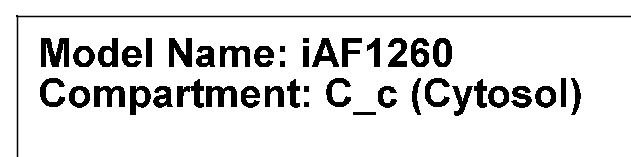
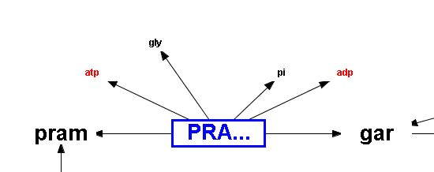
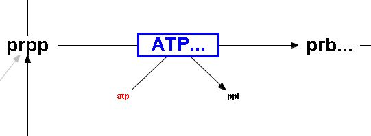
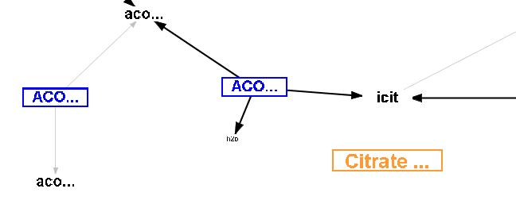
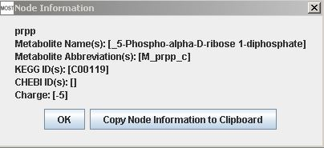
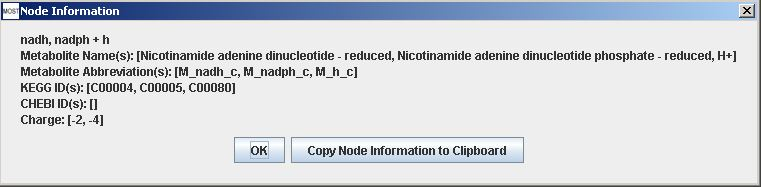

Help Topics
- Load SBML
- Load CSV
- Load Excel Spreadsheets
- Load from Model Collection
- Saving Files
- Clear Tables
- Exit
- Visualize Compartment
- Show Visualization Report
- Locate Identifier Columns
- Set Edge Flux Levels
- Reset Edge Flux Levels to Default
- Visualization Frame Menus
E-mail: dslun@rutgers.edu
View MOST License
MOST source code can be viewed and downloaded here.
Licenses to software used by MOST that require reproduction of the license text in the distribution are given below.
commons-lang3-3.1.jar - View Apache License 2.0
GNU Linear Programming Kit (GLPK) - http://www.gnu.org/software/glpk
GLPK for Java - http://glpk-java.sourceforge.net/
InstallSimple - View InstallSimple License
Interior Point Optimizer (Ipopt) - http://openopt.org/IPOPT
jsbml-0.8-with-dependencies.jar - View JSBML License
JUNG - Java Universal Network/Graph Framework License Information
log4j-1.2.17.jar - View Log4j License
opencsv-2.3.jar - View OpenCSV License
swingx-all-1.6.4.jar - View SwingX License
TableLayout.jar - View The Clearthought Software License, Version 2.0

MOST user interface with title bar, menu bar, toolbar, formula bar, tables, and console (from upper left to lower left), and tree on right
The main portion of the MOST interface consists of three spreadsheets: the Reactions table, the Metabolites table, and the Compartments table. MOST_alpha-14 and previous versions do not have a Compartments table. Tables can be selected by clicking the labeled tabs under the table scroll pane. Tables can be sorted by clicking on the table header of the column to be sorted. Additional clicks toggle between ascending and descending order. MOST has an Unsort menu item to return to the original loaded order.
MOST has a menu bar with File, Analysis, Edit, Options, and Help items, a Toolbar, and context (right-click) menus where editing and analyses functions can be accessed. MOST has a tree where links to the original loaded model and analyses run on the model are located, and a console where FBA or GDBB results are displayed. The console can be expanded by right-clicking in the console and selecting "Pop Out". The results of analyses in spreadsheets and in the console can be saved.
The Formula Bar can be used for editing text in table cells. Text can also be pasted into the formula bar. In cases where text cannot be pasted directly into table cells due to the text being the wrong "flavor", pasting into the formula bar will work.
Metabolite abbreviations are keys in SBML and MOST. If a metabolite abbreviation or name is changed and the metabolite participates in one or more reactions, all reactions that contain the metabolite will be updated for the new name. A warning will be displayed before these updates are made. Click "OK" to rename metabolite and update reactions, otherwise click "Cancel".
Compartments in the Metabolites table are keys in SBML and MOST and are found in the Abbreviations column of the Compartments table. Renaming a compartment in the Metabolites table by editing the cell, using Paste, or Replace may result in changing reactions, and if the compartment is not present in the Compartments table, the compartment will be added to the table.
Warning when renaming a compartment in Metabolites table.
The Compartments table can be used to rename a compartment.
Warning when renaming a compartment in Compartments table.
Replace All cannot be used to rename a compartment. The following message will displayed when this action is attempted.
Since compartments are keys, entries cannot be blank.
All changes in compartments cannot be undone, and after changing a compartment, Undo and Redo history will be cleared.

MOST Visualization uses the JUNG - Java Universal Network/Graph Framework library to create graphs.
The Visualization frame uses zoom and pan navigation. The "+" button can be used to zoom in and the "-" button can ce used to zoom out. Dragging on the graph or moving the scroll bars can be used to move about the graph.
The model and compartment that is being visualized are shown in the top left corner.

Model name and compartment
Reaction nodes have blue text, blue borders, and are all the same size. Metabolite nodes are large if the metabolite is a main component in a reaction and smaller for components such as H2O, O2, CO2, and cofactors. Large metabolite nodes are shown in black.. Smaller metabolite nodes are shown in either in black or red if the metabolite is a cofactor. Reaction edges link components in a reaction and arrows show if a reaction is reversible or not. Pathway names are shown in orange.

Reversible reaction

Irreversible reaction
Flux values are used to scale edge thicknesses by default, but this setting can be changed by using the Visualization Options menu and deselecting Scale Edge Thickness.

Pathway name node example - Citrate Cycle
More information is available for nodes by hovering over a node to view a tooltip. Each node also has a context menu that can be accessed by right-clicking on the node. Selecting "View Node Information" will show a Node Information frame. Selecting "Copy Node Information to Clipboard" will make the node information available to be pasted into a text editor. Node information can also be viewed in a Node Information frame by double-clicking on the node.

Metabolite Information frame
Reaction Information frame
Protons are usually not graphed as separate nodes, but are included in nodes of other metabolites.
Reaction with proton

Proton included with metabolite